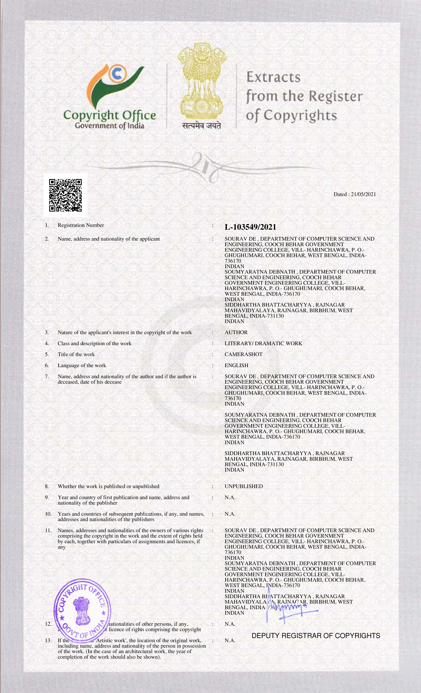

CameraSHOT
CameraSHOT is a simple yet powerful application that automatically analyzes an image’s theme or color scheme and seamlessly alters it with minimal user input. Inspired by Windows’ adaptive theme feature, which picks accent colors from desktop backgrounds, CameraSHOT goes a step further by reimagining the image’s existing color palette for a fresh look.
Abstract
CameraSHOT is simple and effective application software that aims to work upon or alter the theme/color-scheme of an image. The application is inspired by Window’s adaptive theme feature that automatically picks an accent color from the desktop background for Start, taskbar, action center, and title bar. CameraSHOT, however, analyses the image’s pre-existing theme/color-scheme and alters it with almost zero assistance from the user. A detailed description of the software CameraSHOT has been presented in this work. The basic principle behind the software rests in analysing an image and altering its theme or color scheme.
